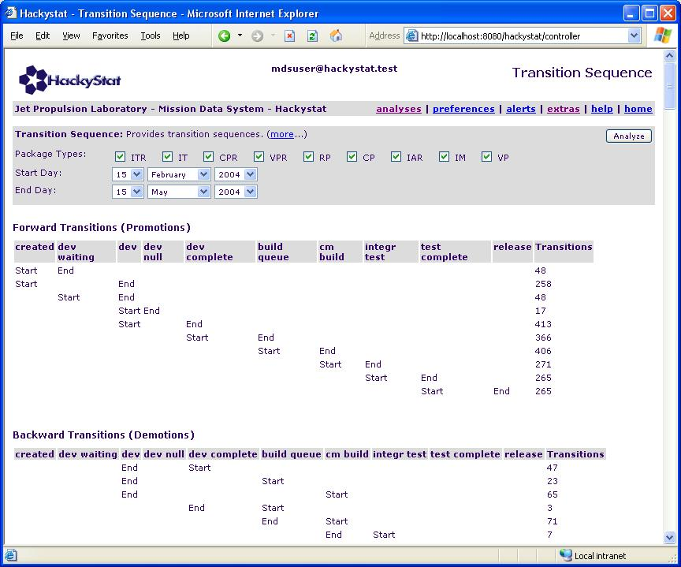
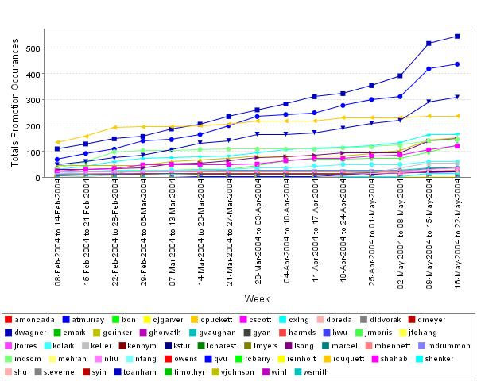

Hackystat MDS supporting MSL MMR
Aaron Kagawa
Philip Johnson
Collaborative Software Development Laboratory
Department of Information and Computer Sciences
University of Hawaii
kagawaa@hawaii.edu
johnson@hawaii.edu
CSDL-04-06
http://csdl.ics.hawaii.edu/techreports/04-06/04-06.html
Last update:
06/17/2004 11:00:21 AM
Abstract
This report presents several screen shots of Hackystat Analyses that
were conducted on the Mission Data System's Release 9 (February 16 -
May 15, 2004). The goal of this report is to identify a single to a few
screen shots that could be useful in the future Monthly Management
Report
for the Mars Science
Laboratory.
Section 1.0 provides the screen shots of various Hackystat Analyses.
Section 2.0 provides a collection of comments reported back about the
analyses.
1.0 Hackystat Analyses
Each of the following subsection provides a screen shot of data
relevant to the MDS Release 9. In this report we provide little
to none explanations of the results, rather we simply provide initial
glimpses into some of the analyses that we are now able to do
execute. Please see <http://csdl.ics.hawaii.edu/techreports/04-02/04-02.html>
for detailed descriptions of past results.
NOTE: these images are screen shots and therefore lose all of the "tool
tip" functionality that Hackystat provides.
1.1 Active Developers
This analysis provides a bar chart of the number of developers that
contributed to a state change for a specified interval. In the
future this analysis will be useful to track how attributes of MDS
changes when the number of active developers increase over time.
1.1.1 Active Developers - All Data
1.1.2 Active Developers - Release 9 - Weekly
1.2 Build Results
This analysis provides a stacked bar chart of the occurrences of the
build results. Currently, the build data is incomplete and is
still being collected..
1.2.1 Build Results - All Data
1.2.2 Build Results - Release 9 - Week Data
1.3 Number of Packages being Built
This analysis provides a distribution using a box and whisker chart of
the number of packages in a single build.
1.3.1 Number of Packages Built - All Data
1.3.2 Number of Packages Built - Release 9 - Week Data
1.4 Promotion vs Demotion
This analysis provides stacked bar charts of the number of State Change
promotions and demotions that occur in a given interval.
1.4.1 Promotion vs Demotion - All Data
1.4.2 Promotion vd Demotion - Release 9 - Weekly
1.5 Throughput
This analysis provides line charts of the number of State Changes that
occur for specified State Changes in a given interval. For
example, we can calculate the number of State Changes between the Dev
and Dev Complete Harvest States.
1.5.1 Throughput - All Data
1.5.2 Throughput - Release 9 - Weekly

1.5.3 Throughput - Release 9 - Weekly (without Integration->Test
Complete and Test Complete->Release Transitions)
1.6 Work vs Rework
This analysis provides stacked bar charts of the level of work vs the
level of rework. Work is defined as scheduled work and is
operationalized with the measurement of the number of Change Packages
that move from Dev to Dev Complete for the first time in the packages
workflow. Rework is defined as the unscheduled work and is
operationalized by measuring the number of Internal Modifications,
number of Internal Anomaly Reports, and the number of Change
Packages that transition from Dev to Dev Complete (for CPs we only
count transitions after the first transition in the package's workflow).
1.6.1 Work vs Rework - All Data
1.6.2 Work vs Rework - Release 9 - Weekly
1.7 Transitions Sequence
This analysis provides a break down of the number of the different
types of Forward Transitions (Promotions) and Backward Transitions
(Demotions) that occurred in the specified interval.
1.7.1 Transition Sequence - All Data

1.8 Release Summary
This analysis provides a summary information of the data associated wit
the Release 5.9. This analysis provides summary and detailed
information.
1.8.1 Release Summary Data
1.8.2 Release Summary - Detailed (part 1)

1.8.2 Release Summary - Detailed (part 2)
1.8.3 Release Comparative
1.9 Developer Stats
This analysis provides developer level stats. For example, we can
chart the number of Promotions or Demotions that are associated with a
specific developer.
1.9.1 Developer Stats - Promotions - All Data
1.9.2 Developer Stats - Promotions - Release 9 - Week Data

1.9.3 Developer Stats - Demotions - All Data
1.9.4 Developer Stats - Demotions - Release 9 - Week Data
1.10 State Gantt
This analysis provides a gantt chart of a specific package changing
Harvest states through time.
1.10.1 State Gantt - CP - Release 9 - Large View (X axis is
in Day units (not shown)).

1.10.2 State Gantt - CP - Release 9 - Small View (large
view zoomed out)
1.11 Package Age
This analysis provides a box and whisker chart of the distribution of
the Age of created packages in the specified interval.
The following table is an explanation of the box and whisker charts:
| Visual Representation |
Statistical Meaning |
| Horizontal line (inside box) |
The median of the observations |
| Solid black dot |
The mean of the observations |
| Solid colored box |
The interquartile range (IQR). Divide the
observations into four equal groups. The box represents Q2 and Q3. |
| Upper whisker |
Observations (if any) with values up to 1.5 times
the highest IQR value. |
| Lower whisker |
Observations (if any) with values down to 1.5
times less than the lowest IQR value. |
| Unfilled circle |
Outliers: observations between 1.5 and 3 times
greater than (or less than) the highest (or lowest) IQR value. |
| Triangle |
Extremes: observations beyond 3 times the IQR.
Indicates data points outside the chart. |
1.11.1 Package Age - All - Data
1.11.2 Package Age - CP - Data
1.11.3 Package Age - ALL - Release 9 - Week
1.11.4 Package Age - CP - Release 9 - Week
1.12 Package Type Age
This analysis provides a box and whisker chart of the distribution of
the Age of created packages for a specified package type.
1.12.1 Package Type Age - All - Data
1.13 State Days
This analysis provides a box and whisker chart of the distribution of
the number of days a specific package type spends in various Harvest
States.
1.13.1 State Days - CP - Data
1.13.2 State Days - IAR - Data
1.13.3 State Days - IM - Data
1.14 State Days By Interval
This analysis provides a box and whisker chart of the distribution of
the number of days a specific package type spends in the Dev Harvest
State.
1.14.1 State Days By Interval - ALL - Data
1.14.2 State Days By Interval - Release 9 - Data
1.14.3 State Days By Interval - CP - Data
1.14.3 State Days By Interval - CP - Release 9 - Data
2.0 Comments
2.1 Dr. Philip Johnson (CSDL, UH)
- The tooltips over the bar graphs are not informative.
Particularly when you have 20 or so lines on a chart, the colors don't
really distinguish the identities. It would be very helpful to have the
tooltips identify the 'owner' of the line as well as the current value
of the data point.
- 1.2.2 Build Results - Release 9 - Week Data
- Why were there so many compile failures in February?
- 1.3.2 Number of packages built - Release 9 - Week data
- OK, there's the answer to my last question. The reason
there wer so many compile failures in February is because that week had
many more packages included in a single build.
- It looks like we've got the beginnings of a causal chain: the
number of packages in a build might be a predictive measure of the
number of compile failures. The next step would be to see if
there are different impacts on development when you have a high number
of builds due to many compile failures (as in the week starting 08-Feb)
vs. around the same number of builds but with significantly less
compile failures (as in the weeks starting 18-April and 25-April)
- 1.6.2 Work vs. Rework release 9
- Another chart showing that 08-Feb was a bummer week. The
"work" values might serve as a good baseline; they seem relatively
constant.
- All of this indicates to me that I'd really like to see these
values related to (a) the overall size of the system, (b) the number of
unit tests of the system (which is another proxy for 'functionality')
and (c) the amount of churn.
- I think I also want to see some of these values related to the
"magic" transition that indicates the package is finished (i.e. cm
build -> integration test?)
- Basically, what we want is to see how values of "process"
(which are things like the throughput values, build results, the
box-and-whisker charts, etc.) are related to "product" (which is,
roughly speaking, the increase in functionality of the system, which
can be proxied by the value of the "magic" transition, the size, the
number of unit tests in the system, etc.)
- It does look like we're getting some "signal" out of the data,
which is good. The 08-Feb week is clearly an anomaly; it shows up
as a special week on at least three analyses. It might be worth
doing a little investigation to ask them what was going on that
week. At the same time, you can look for false negatives---were
there bad (or good) weeks that don't show up as such in this data?
- 1.8.3 Comparative
- This is a cool new analysis! I'd like to also know the total
number of calendar days for each release, and then do some statistics
to see if there are relationships between calendar days and any of
these other indicators.
- 1.9.* Developer data
- I can't see anything useful in here!
- 1.11.2 Package age, release 9
- This one looks extremely interesting to me. I would like
to know how many packages are used to build each distribution in a
given week (as a tool tip). What I'm seeing here is that the
package age distribution is (and should) fall in
variability/mean/median as you get closer to a release date.
- So, a couple of questions:
- How hard would it be to get some basic "product" measures
(size, churn, number unit tests, "magic" transition) into the analysis
mix?
- Can we start doing some analyses that combine one or more
key "product" measures with one or more key "process" measures?
What are the candidates for "key" process measures from the JPL
perspective, after looking at this data?
- Which product and process measures are available from other
projects? How can we "normalize", so that we can start to do things
like compare the MDS product/process trajectory with that of other
projects?